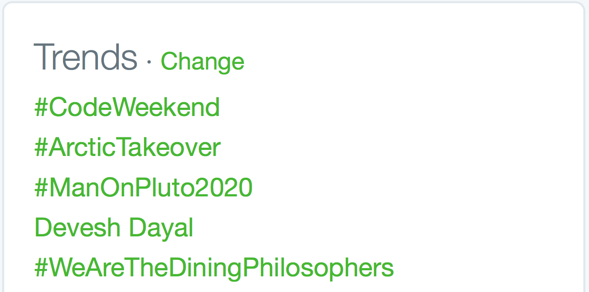

Code Weekend Spring 2k16
Building your first webapp
Code Weekend is scheduled for Saturday and Sunday, January 16th and 17th and will comprise of four workshops to help participants build their very own webapp. Participants are expected to have very minimal coding experience as we will be carefully explaining everything we do as we go. This should be extremely helpful to first time hackers (a fun term we use for people that build things!) especially with PennApps scheduled for the weekend after. If you haven't already, check it out - it's a great way to jump in the deep end and expose yourself to the incredible world of building things (and actually they're doing great stuff for first-time hackers as well).
These workshops have been organized by the Dining Philosophers, PennApps and many talented individuals. Student mentors will be around to help participants as we go through these highly interactive, live-coding-based workshops.
If you already have some coding experience, then feel free to skip the first session. Here's what we expect you to know and have installed before you jump into the second session:
- The basics of how the web works.
- HTML/CSS/Javascript to the extent that you can build a simple static webpage.
- Know how to use Terminal/Command Prompt to move folders, change directories, and create files.
You can find the workshops from the last Code Weekend (Fall 2015) here.
Introduction to Web Development
Web Pages and the basics of development
Welcome to your first coding experience!
We'll be going over quite a few things in this opening workshop:
- How to search effectively using Google + Using Stack Overflow
- How the internet works and why web development is so different from, say, Java
- Basic HTML and CSS and how webpages are structured
- Javascript, JSON and how to make things more fun
- The basics of Terminal/Command Prompt
This shouldn't take too long though, so whatever time we have left at the end of the workshop will be for you to make your own personal chat app!
Alright, let's get started!
An Introduction to (the) Life (of a Developer)
When coding, you'll run into tons of small problems and errors that you don't initially know how to solve. This is completely normal. In order to write solutions to every problem that you could hypothetically run into, you'd need a manual taller than the Empire State building.
Thankfully, we all have a resource with more information that we can possibly imagine - teh interwebz. You've probably searched for things using Google before, but most coding problems can actually be solved by effectively Googling your issue. Here are some tips for finding the answers to all your problems on the Internet:
- Be descriptive. If you're searching for what's causing an error then you can try just searching for the entire error message, or try describing what happened. For example, "Homebrew does not install through terminal on OSX Yosemite" is a better search query than "homebrew not working", though the best search query is often some combination of plain text and the actual error message. Often error codes make great search queries, as long as they are contextualized (i.e. with the name of the language/environment).
- Along that vein, use as many specific words as possible. You can use complete sentences if you'd like, but normally four or five very descriptive nouns/verbs is ideal, and you won't throw Google off-track by searching for unnecessary things. For example, you try to put a banner at the top of a web page, but there's a weird white border around the entire page. Googling "there's a weird white border around the entire page" isn't helpful. Always start with the name of the language you think is suspect if you can (in this case, it's CSS, since all style things on the page are controlled by CSS). Then, describe the problem with just a few words. Here, I used "CSS no page border". The first result was really helpful, and ended up solving my problem.
These resources are also awesome:
- Stack Overflow is the best. Search results that link here are often the most helpful, and you can almost always find someone who's had the same problem as you on here. You should mostly refrain from posting questions to Stack Overflow since odds are your question has already been answered there somewhere.
- If you're looking for syntax, or lists of inbuilt functions, then look for the Official Documentation for the language in question. W3C Schools is great for HTML, CSS, and Javascript.
- Bentobox is a great all-in-one resource to learn to code for a huge number of technologies.
- Code Academy has some great tutorials. The lessons for each language can get tedious, but the tutorials where you build actual things are pretty great. If you're looking for a good introduction to HTML/CSS, General Assembly's Dash is probably the best place to start.
An Introduction to the web
There's pretty much three things happening every time you open a website:
- Your browser looks up an address (say google.com) and follows it back to its home - the server which actually runs the website. This server is basically just a computer, albeit a huge, immensely powerful computer possibly comprising acres of computer hardware connected together. For this workshop though, that's just going to be your laptop...we don't provide that kind of computing power.
- This server is what we call the backend. This server now processes your request - it could be a request to view the website or something more complicated like an attempt to log in to a dashboard - and sends a response back to your computer. This server will often be programmed in languages such as Python, Ruby on Rails, even Java (but not as much these days). Node.JS is a framework that lets us use Javascript on the backend as well as the frontend.
- Your computer now reads this response and converts it into the webpage you actually see on your computer. This last bit of conversion is what we call the frontend doing its work.

So basically, any work done on a server has been programmed into the backend, while anything done inside your browser has been programmed into the frontend. These are the two main components of any website.
You'll see later on that requests aren't just made to the server when we first open the website; it's often faster to make smaller requests first, load the important parts of a webpage and then request additional bits of information when they're needed (think Facebook's Newsfeed). It's also used when we do things like attempt to log in to a website. This is one of the reasons why Javascript is so useful as a frontend programming language, as it allows us to do these kinds of things very easily and update the webpage immediately without having to refresh the page.

What is Terminal/Command Prompt?

Terminal (or Command Prompt on Windows) is basically a way for us to access the Command Line. This gives us access to a wonderful variety of things that we can do. We will be spending a good amount of time this weekend in here, so let's take some time to get used to it.
Once you fire up Terminal or Command Prompt (on Windows, you'll later need to run cmd.exe by right clicking on the shortcut and clicking Run as Administrator, you'll know it's running as Admin if your path ends in ../system32), here are a few simple commands that you can type:
ls(DIRon Windows) lists all the files in the current foldercdallows you to change directory. Socd Documentswill move into the folder Documents, if there is such a folder in the current directory. You can check this by usingls(DIRon windows). To move up a directory, say back to where you were before you went into Documents, type incd ../.pwdprints out the current path you've traversed in the file system. It's particularly helpful once you've usedcda few times, and aren't sure where you are anymore.mkdirallows you to make a folder in the current directory. Somkdir Such Magicmakes a folder named 'Such Magic'.mv(moveon windows) will let you move files and folders. In Terminal you can domv ~/Desktop/MyFile.rtf /Volumes/Backup/MyFolderto move MyFile.rtf. On Windowsmove c:\windows\temp\*.* c:\tempwill move everything fromC:\windows\temptoC:\temp.*works as a wildcard operator here. Careful with this one - you may not want to move things around haphazardly.
Once you've installed Node.JS (which we'll do in the next workshop), you'll also be able to enter commands like npm install express that will use Node Package manager to install plugins such as Express. You'll aso be able to start up MongoDB from here using mongod.
Let's start making stuff!
Whoohoo! We've made it this far, and it's finally time to start making stuff!
Sublime Text 2
We've got to install a whole buch of stuff over the next few workshops. Let's start simple, go and download Sublime Text 2. It's the best text editor in existence (yes, that's arguable) and this is where we're gonna be doing all our work. If you have a different favorite text editor, feel free to use it.
NOTE: Sometimes, when you save your work, a window will pop up asking you to buy Sublime. Just ignore this and hit "Cancel" and you can use it forever. Alternatively, you can buy it and support a fellow developer.
Making a Chat App
Well done! You've got everything you need installed. Now let's test what you've learned in this workshop. Here's an HTML and a CSS file. Try and use this as a base to create your own personal chat app. The adventurous ones among you can even try and create a complete static website; you know enough that you can just Google for anything you need. Take a look at some of our organizers' websites for inspiration (Anton, Devesh, Hunter, Sumit, Abhi) or browse around the internet to see nice designs (like Medium).
Files
You can download the HTML and CSS files we looked at here by following these links. Use these as starting points for building your personal chat app.
HTML/CSS
Simple HTML and CSS
HTML (HyperText Markup Language) is the backbone of any webpage. It's where we add in all the information - what the webpage actually displays, as well as information about the page itself such as its title.

CSS (Cascading Style Sheets) dresses up this information. Most (but really all) webpages link to a CSS file that stores information on how a browser should display the information it recieves in the HTML. While it is possible to add CSS code into the HTML document, it is never done as it makes it nearly impossible to keep track of code and also slows down the page.
Javascript is the fun part. It does dynamic things with your webpage, updates content on the fly and can animate just about anything. We'll talk about this later.
In short, we can visualize it as follows: a full website is a program with raw structure defined via HTML, dressed up with CSS and controlled/manipulated with JavaScript.
Every webpage is built in the HTML DOM (Document Object Model). This means that every element in the HTML is an element (or a Node, the mathematical kind - not to be confused with Node.JS). So we could call this paragraph an element in the DOM; the same is true of any of the images and pretty much everything else here.
Let's start with HTML (HyperText Markup Language).

HyperText is text that will hyperlink you to other text. That's it. Think links.
It is called a Markup Language because HTML is not written as plain text. It is marked up into the form of HTML elements called 'tags.' Tags are denoted by < followed by >. Below is the most basic HTML document we can create (except for the comments that we've added in to make things clearer).
<!-- This, is a comment that does not affect any of the code we write. We can use this to leave notes in the code for our future selves, or for others reading our code. This is also the most basic HTML document you can create. -->
<!DOCTYPE html>
<html>
<head>
<title>Code Weekend Sample Page</title>
</head>
<body>
<p>This is a basic HTML webpage.</p>
</body>
</html>
<!DOCTYPE html> <html> is how you should start any HTML file. For every HTML tag that we open, there must be one that closes it. This way we can easily tell what information is contatined in what tag, and it allows for easy nesting. The obvious drawback is that this is highly verbose. For example, <html> must eventually be closed by </html>.
Aside from the content rendered into the body of a webpage, we often define more information about the site in the <head> tag like this:
<head>
<meta charset="utf-8">
<meta name="description" content="Code Weekend Sample Page">
<title>Code Weekend Sample Page</title>
<link rel="stylesheet" href="main.css">
</head>
So now we've specified the character set that the page uses - this is just to make sure the browser doesn't think that the page is in a language other than english. Then there's a description followed by the actual page title (this is what you see in the title bar of your browser). Finally there's a tag where we've linked this HTML file to a CSS document (the href component is how we tell the browser where to look for this file - it can be a path or a web address). This is how we add external CSS files to a webpage - which we'll do soon enough, don't worry!
Now let's get to the fun part - the <body> tag. This is where all the actual stuff that shows up on your webpage goes. Let's try adding some information in.
<body>
<h1>Code Weekend Sample Page</h1>
<h2>Here's a smaller heading. We can go all the way down to H6</h2>
<!-- Here's a comment that will not show up on the actual page -->
<p>
Here's a paragraph of text. You can fill in whatever you feel like in here and just end this tag to fininsh the paragraph.
</p>
</body>
Let's look at this whole document now.
<!-- This, is a comment that does not affect any of the code we write. We can use this to leave notes in the code for our future selves, or for others reading our code. This is a slightly more compelte HTML document, but still doesn't have any information about styles. -->
<!DOCTYPE html>
<html>
<head>
<meta charset="utf-8">
<meta name="description" content="Code Weekend Sample Page">
<title>Code Weekend Sample Page</title>
<link rel="stylesheet" href="main.css">
</head>
<body>
<h1>Code Weekend Sample Page</h1>
<h2>Here's a smaller heading. We can go all the way down to H6</h2>
<!-- Here's a comment that will not show up on the actual page -->
<p>
Here's a paragraph of text. You can fill in whatever you feel like in here and just end this tag to fininsh the paragraph.
</p>
</body>
</html>
Here are some more important HTML tags:
<a href="link here">text for the link</a>- used to create links<img src="path/link to image" alt="text to show if image doesn't load" />- used to add images<em>text here</em>- used for italicising text<strong>text here</strong>- used to bold text<ul>and<ol>- used to start Unordered and Ordered Lists<li>Item here</li>- used to denote each item in a list<script> Code in here </script>- used to add non-HTML code such as Javascript to a page. We can (and should) instead add ansrcattribute to the<script>tag and link to an external Javascript file to keep our ccode clean and maintainable.<div>- used to denote different divisions within your HTML body. Possibly one of the most useful tags when it comes to layout and styling in CSS.<textarea>- used to display text and/or allow the user to type text.<button>- used to add buttons to a given page.
Now let's add a little more functionality to our chat app. First, we'll add a way for the users to enter messages and then we'll allow them to submit those messages to the server.
<!-- This, is a comment that does not affect any of the code we write. We can use this to leave notes in the code for our future selves, or for others reading our code. This is a slightly more compelte HTML document, but still doesn't have any information about styles. -->
<!DOCTYPE html>
<html>
<head>
<meta charset="utf-8">
<meta name="description" content="Code Weekend Sample Page">
<title>Code Weekend Sample Page</title>
<link rel="stylesheet" href="main.css">
</head>
<body>
<h1>Code Weekend Sample Page</h1>
<h2>Here's a smaller heading. We can go all the way down to H6</h2>
<!-- Here's a comment that will not show up on the actual page -->
<p>
Here's a paragraph of text. You can fill in whatever you feel like in here and just end this tag to fininsh the paragraph.
</p>
<p>
Let's continue building our chat app. We'll first add a textarea element to input text, and apply some CSS properties to make it look pretty!
</p>
<form>
<textarea placeholder="Write your message here..." required></textarea>
<button type="submit">Send Message</button>
</form>
<h3> Messages </h3>
<p>
Here's a list of all the messages so far:
</p>
<ul>
</ul>
</body>
</html>
Umm, what about CSS?
Almost there! Before we can decide how elements on the page should look, we actually need a way to find and identify these elements. That HTML document we said was almost complete, well, it was almost complete. The last thing we need to add in are identifiers as tag attributes, and these fall into two categories:
- IDs: These are unique to an individual HTML element. Once I give an ID to an element, it cannot be used again. Think Penn IDs. Every element can be assigned an ID. For example:
<p id="workshop-introduction">. - Classes: These are reusable names that we give to ranges of elements. This allows us to do thigns like apply the same style (say, a font) to multiple elements that have the same class, rather than writing the same thing over and over. For example, we can create multiple paragraphs with the same class:
<p class="red-text"> This text is theoretically red.</p> <p class="red-text"> This text is also presumably red. </p>.
Now we have a way to decide on styles. Let's look at that HTML document again:
<!-- This is a slightly more complete HTML document, but with no styles as yet. -->
<!-- This, by the way, is a comment that does not affect any of the code we write.
We can use this to leave notes in the code for our future selves,
or for others reading our code -->
<!-- index.html -->
<!DOCTYPE html>
<html>
<head>
<meta charset="utf-8">
<meta name="description" content="Code Weekend Sample Page">
<title>Code Weekend Sample Page</title>
<link rel="stylesheet" href="css/main.css">
</head>
<body>
<h1>Code Weekend Sample Page</h1>
<h2>Here's a smaller heading. We can go all the way down to H6</h2>
<!-- Here's a comment that will not show up on the actual page -->
<p class="red-text" id="intro-para">
Here's a paragraph of text. You can fill in whatever you feel like in here and just end this tag to finish the paragraph.
</p>
<p>
Let's continue building our chat app. We'll first add a textarea element to input text, and apply some CSS properties to make it look pretty!
</p>
<ul id="messages"></ul>
<form id="message-form" action="#">
<textarea id="message" placeholder="Write your message here..." required></textarea>
<button type="submit">Send Message</button>
</form>
<h3> Messages </h3>
<p>
Here's a list of all the messages so far:
</p>
<ul class="messages">
</ul>
</body>
</html>
We can also just change the style for an entire kind of element. So we could just change how all the p or <h1> tags look.
Let's take a look at what CSS looks like!
html {
font-family: Helvetica, Arial, sans-serif;
font-size: 100%;
}
body {
padding: 50px 100px;
}
h1 {
font-size: 40px;
font-weight: lighter;
color: blue;
}
.red-text {
color: red;
}
#intro-para {
border: 2px solid black;
}
#message-form {
margin-top: 1.5rem;
}
textarea {
width: 100%;
padding: 0.5rem;
font-size: 1rem;
border: 1px solid #D9D9D9;
border-radius: 3px;
min-height: 100px;
margin-bottom: 1rem;
}
button {
display: inline-block;
border-radius: 3px;
border: none;
font-size: 0.9rem;
padding: 0.6rem 1em;
color: white;
margin: 0 0.25rem;
text-align: center;
background: #BABABA;
border-bottom: 1px solid #999;
}
button[type="submit"] {
background: #86b32d;
border-bottom: 1px solid #5d7d1f;
}
button:hover {
opacity: 0.75;
cursor: pointer;
}
As you can see, there are small differences in syntax depending on the selector (whether you're changing all instances of an element, instances of a class, or just a single element by ID) but it's mostly quite simple. How did we know what attributes to change? Google! If you're ever confused about what a certain attribute does, and what possible values the attribute can take - do not hesitate to use Google or an HTML/CSS reference website.
You should look through the resources at the top of this section for more information on HTML tags and CSS attributes, but the best thing to do is to Google things you're looking to do and look for the W3C Schools or Stack Overflow results.
A great reference for all things HTML/CSS/JavaScript is the Mozilla Developer Reference.

You can download the HTML and CSS files we looked at here by following these links.
A great way to play around with CSS styles is to right-click on this page in Chrome, Firefox or Safari (Here's why you should avoid Internet Explorer), choose Inspect Element, and try changing the CSS styles on the right hand side of the Developer Tools window after selecting the HTML element you want to edit.

Now, our chat app looks a little more complete. Now let's learn how to actually make this app work!
Javascript
Javscript, finally!
Javascript is a scripting language and has very little to do with Java other than vaguely resembling it in syntax. By scripting language we mean that there are no Classes, Interfaces, Main Methods or any of the regular Object-Oriented Programming that we're (maybe) used to. You just write code in a file, link to it in your HTML and it exectutes.
In fact...

Javascript is a very easy language to pick up. There are no types, Javascript just guesses (mostly well) what you want. This means that writing var x = 5 will create a variable named x of the type Integer with the value of 5. Writing var x = "5" would create a String named x with the string 5 as its value.
The most common types we will use are Strings (just text, such as "This is some text"), Integers (just plain old numbers, like 5, 6, 42, or 314596 - no decimal points though), Doubles (decimal points are now allowed, so 3.14 is good to go) and Booleans (True or False). There are a whole bunch of functions and operators built into Javascript that we can use on these data-types. You should search for them as and when you need to do something that you think is fairly common (you'll be surprised by how common almost everything you want to do is).
Here's some sample Javascript code:
var myVariable = "Code Weekend";
alert ("I'm learning the basics of JavaScript at " + myVariable);
This creates an alert (a pop-up on a webpage) that says "I'm learning the basics of JavaScript at Code Weekend". There was absolutely no reason to use a variable here other than to show how we can use it. Here's a function in Javascript that squares a number:
function square (number) {
return number * number;
}
// This is a single line comment that does not need to be closed.
/* This is a multi-line comment
that only ends when we do this */
console.log(square (5)); // This prints the result to the javascript console in your browser's (Chrome or Firefox) developer tools.
// We can also write the above function as the following:
var square = function (number) {
return number * number;
}
// Here's an anonymous function that calculates the square of 5:
(function (number) {
return number*number;
}) (5);
// In that case, we were executing the anonymous function immediately, but we don't have to always do that:
function idPlusString (number) {
var cube = number * number * number;
return function (name) {
return "Hi "+ name + ". " + "Your ID is " + cube + ".";
}
}
// This returns a function that you can add a string to. If you don't understand this last function, it's okay.
Javascript mainly works on Objects and Arrays to store and access data.
// Here's an Object that contains an array
var myDetails = {
'name' : "Mark Gates",
'age' : 24,
'interests': ['Figure Skating', 'Javascript', 'Tennis', 'EDM']
}
console.log(myDetails.name); // prints the name property of the object, ie, 'Mark Gates'
console.log(myDetails.interests[1]); // prints 'Javascript' (array positions start from 0!) to the console
Objects are essentially key-value pairs. We can access to values easily using the notation object.key.
If you haven't noticed yet, we end almost every line (or more specifically, every command) with a semicolon. It's okay if you end every line with one, it's better to err on the side of more rather than less, but you can get away with leaving off the semicolons after function definitions and pretty much everything that ends in curly braces (}).

JSON (Javascript Object Notation) is the data format of the internet. This is what is used to send data that is not HTML/CSS/JS across the internet. That could range from search results to login sessions. Another commonly used format is XML, but that is slowly being replaced everywhere by JSON. JSON is very simple to understand because every JSON file is simply one Javascript Object. It uses key-value pairs and Arrays to liberally to store information. Let's look at an example of a JSON file:
{
"employees":[
{
"firstName":"John",
"lastName":"Doe"
},
{
"firstName":"Anna",
"lastName":"Smith"
},
{
"firstName":"Peter",
"lastName":"Jones"
}
],
"company" : "ABC Holdings",
"lastUpdated" : "September 6th"
}
It's exactly like a Javascript Object, and that's because that's exactly what it is. Just for kicks, let's compare this to XML:
<employees>
<employee>
<firstName>John</firstName>
<lastName>Doe</lastName>
</employee>
<employee>
<firstName>Anna</firstName>
<lastName>Smith</lastName>
</employee>
<employee>
<firstName>Peter</firstName>
<lastName>Jones</lastName>
</employee>
</employees>
<company>ABC Holdings</company>
<lastUpdated>September 6th</lastUpdated>
So much better isn't it! JSON is way more readable and saves you the trouble of having to close every tag you open. Now imagine this on the scale of thousands of search results. JSON makes your life much easier, and websites much faster.
And that covers the basics of HTML, CSS and JavaScript. Naturally, there's a lot more we could go into depth about for each of them, but we've found that it's best to learn by experimenting and trying out things on your own, using the resources listed at the start of this session. But before we get to that, let's not forget the pertinent question:
JQuery
Javascript is pretty cool on its own.
But it's cooler with external libraries.
One of the most popular third-party JS libraries is jQuery. jQuery's a pretty full-featured set of tools, but, at its core, it's an easy way of manipulating HTML on a page.
Let's look at how that works.
First things first, let's import some code!
Before we can use JQuery, we're going to have to download JQuery and make sure
our program knows how to access it. Head to the JQuery website linked above and
head over to the download tab. Once there, you should find JQuery 2.x available
for download. If your computer doesn't download the file and displays text
instead, don't worry and just copy and paste the contents of the file into a
new text file that you call jquery.js. Go to the client directory of your
project, create a new directory named js, and place the file within it. This
is not a required directory, but this is just for the program to look nice. Now
you should have a file client/js/jquery.js.
Once we have done this, we have to let the program know where JQuery is located. This is fairly easy, and can be done by adding something like '<script src=''
' however, inside of the single quotes, instead we are going to place the location of our file. JQuery is a tool, or a script, and what the script tag does is it lets us know the location of these tools. In our case, the full line should look something like: ''.
Now Lets Use It!!!
Recall HTML elements have various tags. Something like
<h1 style="color: red;" id="first-big-line">Hello world!</h1> makes use of
various HTML tags. Namely, it has an id and a style tag. In
Javascript, you can use some of these tags to "select" an HTML element. For
instance, if you wanted to select this element, you could type
document.getElementById("first-big-line"). That's a bit of a mouthful, isn't
it?
jQuery makes it way easier. The above <h1> can be selected with jQuery by
simply typing $('#first_big_line'). The # refers to the fact that we're
selecting by id (just like how, in CSS, you reference an id with #)
There are some very neat functions built
into jQuery as well. Say I wanted to get the text from my "first-big-line"
header. I can simply do the following.
var header_text = $('#first-big-line').text();
console.log(header_text);
This will print the text inside the header to your Chrome console (Option + Command + J on Mac).
Now, how do we use jQuery in an actual project? Let's make a new file in our
client/js/ directory. Call it jquery-client.js.
In client/index.html we'll need to link this new Javascript file. At the
bottom of the body, below where you linked jquery.js, we'll link another
script. It's as easy as:
<script src="js/jquery.js"></script>
<script src="js/jquery-client.js"></script>
Now, open up client/js/jquery-client.js. It's time to code.

Okay so now that we have basic setup of all your files. Let's break down what
you need to do when processing a message. Recall that our messages will be stored
in a JSON object with just the text itself. No sort of styling. We need to create
chat boxes for every message that comes in. jQuery has a neat function appendTo()
that takes html as its one argument. It is formatted in the following manner:
$('selector').appendTo('<SOME HTML TAG HERE>blah</SOME HTML TAG HERE>');
Like the name suggests, it appends html code to the element you have selected. In the main part of our website that contains the messages, we can append formatted messages.
Also another neat thing, is that you can assign variables to functions (think of it as naming a function for use later). Let's do that now.
var infoColor = '#888888';
var errorColor = 'red';
var messageColor = '#000000';
var nameColor = 'blue';
var formatMessage = function(user, message) {
return '<span style="color: ' + nameColor + '">' + user + '</span>' +
': ' + message;
};
Let's break this piece of code down. We are assigning a variable to a function
that has two parameters: the sender username, and the set nameColor color.
This will go ahead and put a username before every message.
We can go ahead and call this with simply by doing formatMessage(param1,param2)
where param1 corresponds to the user and param2 corresponds to message.
Pretty Dank amirite? Let's move on to the next piece of code.
var postMessage = function (color, contents) {
console.log('Error: jQuery not ready yet');
};
$(function() {
postMessage = function(color, contents) {
$('<li><span style="color: ' + color + '">'
+ contents + '</span></li>').hide().appendTo('#messages').fadeIn(200);
};
$('#message-form').submit(function (event) {
event.preventDefault();
//client side messaging only
postMessage('black', formatMessage('Me', $('#message').val()));
$('#message').val('');
});
});
Wait, you might be thinking, what the heck is $(function() { ...? That looks
so confusing! You're right. It is confusing. Sorry.
One downside to jQuery is the need to initialize the library before we can use
it. To handle that, jQuery exposes a $() method that is passed a function as
the parameter. A function as a parameter? That's preposterous!
Nah, it's not. It's Javascript. You'd learn this more fully in CIS120, but the
general gist is pretty simple: Functions in Javascript are treated just like
variables. So, the $(function param) function takes a function as a parameter
and then,
when jQuery is initialized, calls that function. Take, as an example, the code
$(function () {
alert("HELLO WORLD");
});
All that's doing is saying "Hey jQuery! When you're ready, call this function
that does alert("Hello world");. The code above is just a more complicated
version of that. It says, jQuery, when you're ready, do this:
// ... continued from above
postMessage = function(color, contents) {
$('<li><span style="color: ' + color + '">'
+ contents + '</span></li>').hide().appendTo('#messages').fadeIn(200);
};
$('#message-form').submit(function (event) {
event.preventDefault();
//client side messaging only
postMessage('black', formatMessage('Me', $('#message').val()));
$('#message').val('');
});
// ... and so on
What's going on here? Well, a couple things.
First, we define that pesky postMessage function. This function uses jQuery
to append a new message (defined by color and message contents) to the
screen. Look at the line
$('<li><span style="color: ' + color + '">'
+ contents + '</span></li>').hide().appendTo('#messages').fadeIn(200);
Let's expand that out and see what's happening:
$('<li><span style="color: ' + color + '">' + contents + '</span></li>')
.hide()
.appendTo('#messages')
.fadeIn(200);
We "select" a virtual element (it doesn't exist yet), hide it, append it to
the #messages element, and then animate its fade in. That's some pretty
intermediate jQuery right there. We first "hide" the text (make its visibility 0,
but add it to the page), then append it to the messages, and finally go ahead and
fade in the message from transparent to visibile in 200 milliseconds (note most
Javascript timestamps are in milliseconds).
Next, we define an event for when the message form is submitted:
$('#message-form').submit(function (event) {
event.preventDefault();
//client side messaging only
postMessage('black', formatMessage('Me', $('#message').val()));
$('#message').val('');
});
This snippet does a few things. event.preventDefault() cancels the default
web browser form-submit behavior. Then, we use that postMessage function to
post a message the screen. Finally, we do $('#message').val(''); to reset the
contents of the form (overwriting the val of the text field to an empty string
'').
And that's that.
Open up the page again. Try typing. Click send message. If everything worked, you should see jQuery working to push your messages to the screen.
If that's not happening, blame Devesh.
The Server
Node
Node.js is, at its core, an environment for using Javascript to program web servers. Because some people like Javascript, and because we all think PHP sucks, the Internet in general seems to think Node is pretty cool. So, while we could feasibly use any number of different languages to make the back-end of our chat client, today the focus will be on Node.

Again, some of us seem to think its cool. Hopefully, by the end of this, you'll see why.
First things first, let's install Node. Instructions for installing depend on your operating system, so keep scrolling until you find the right directions.
Mac
The easiest way to install Node is through Homebrew, a package manage for OSX.
Sometimes Homebrew is already installed on your computer, and sometimes you need
to install it. Bring up a terminal window and type brew install node. When it
finishes, it might show you a few commands you need to run in Terminal. Run
those commands and you're set!
If instead of that command terminal got angry and said it doesn't know what
brew is, it means you don't have Homebrew. No worried. Let's install Homebrew
by typing this into terminal:
ruby -e "$(curl -fsSL https://raw.github.com/Homebrew/homebrew/go/install)"
If Homebrew installs successfully, try brew install node again. If that still
doesn't work, try Googling the error text and looking for solutions. If that
doesn't work, look around and ask a mentor to help.
If Homebrew is causing too many problems then just try the installer
here. You can also install NodeJS using Fink
(fink install nodejs) or MacPorts(port install nodejs).
Windows
It's easy to get Node.js set up with a Windows machine:
Download the .msi file from here
Use the Windows installer to get it set up.
Linux
There are about a million different ways to install things on various Linux-based operating systems. Go to this link for a full list.
All set? Let's get started.
What does server-side really mean?
Till now, we've dealt with HTML, CSS and JavaScript. These are the files that a server send over the internet to your browser when your browser tries to navigate to that website. However, as we saw in the last workshop, these files aren't intelligent, they simply display information that is entered into them.
So real webapps (anything more complicated than a personal landing page) have servers that use some boilerplate static files (i.e. HTML, CSS and JavaScript) and do their own logic to fill them in with real, intelligent information (the difference between a recipe that you can write down once - you can make it as fancy as you want but it's static and won't change - and something that displays the weight of the person eating all that food in real time - dynamic, because this would change depending on who the person was and when they check this). These servers can be written in many languages, right from C to Java to Python or even Assembly language if you wanted to. In this workshop, we’re going to use NodeJS, that allows us to use JavaScript to write our server-side code, even though JavaScript was initially designed to run only inside the web browser and not on servers.
We usually have servers to do the thinking, databases to store the information and static files to display this information in the user’s web browser. These de is a very common JavaScript-based web framework. Node is a framework that lets us write our own servers in JavaScript to run on our machines. Node is great because it has modules, which are bits of code other people have already written that can easily be added to give new functionality to your app. NodeJS has the most modules of most modern web frameworks, 3 parts come together to form the core of any website. Often, websites also use APIs (basically a way for websites to talk to each other) to make their websites more dynamic, or to pull in information from other websites.
What is a NodeJS app?
Node is a very common JavaScript-based web framework. Node is a framework that lets us write our own servers in JavaScript to run on our machines. Node is great because it has modules, which are bits of code other people have already written that can easily be added to give new functionality to your app. NodeJS has the most modules of most modern web frameworks, and that’s part of what makes it really great for writing webapps fast.
Now that you know a bit about Node, let's jump in and explore the different components of our Node app.
Package.json
The first bit of the Node app is purely logisitcal. A package.json is
a standardized JSON file containing all the pertinent information about this
app. It's fairly readable and contains information about the authors, app
version, and versions of Node modules used.
For this bit, you'll want to hop into the server folder in your main project
directory, and create a package.json. Yours should look something like this
{
"name": "chat-server", // module name
"private": true, // keeps this app private
"version": "1.0.0",
"description": "A chat server built for Code Weekend Spring 2016",
"main": "server.js",
"dependencies": {
"express": "^4.13.3",
"giphy-api": "^1.1.11",
"moniker": "^0.1.2",
"socket.io": "^1.3.7",
"underscore": "^1.8.3"
}
}
You'll notice a couple important things here. Chiefly, you'll see that list of
dependencies. That list specifies all the different external node modules
we'll be relying on in our app. We have 5 dependencies here, since we're going
to, when everything is all set and done, use 5 external packages.
When you're done making that file, open up a terminal window, navigate to the
server folder and type npm install. This'll read your package.json and
download all the necessary dependencies. You'll notice you now have a folder
called node_modules. That's where Node houses the code for all of these
dependencies.
Once that's all set we're ready to keep going.
Socket.io
We're almost ready to start writing our Node app. Before that, however, a quick interjection to introduce Socket.io.
Socket.io is a widely used Node module for handling web sockets. The WebSocket protocol is, according to Wikipedia, a means of providing full-duplex communication over a single TCP connection. For our purposes, it boils down into a set of rules that allow web browsers to communicate in real time with web servers over HTTP.
Many web servers in the real world have the main task of getting HTTP requests
(the kinds your browser sends whenever you enter an address in your address bar)
and streaming responses in the form of webpages. Later, in workshop 4, we'll
use Express to serve the webpages in our client folder exactly like that. For
now, though, we can just open our client/index.html file in a browser.
In the end, the interesting part of our application is going to be how those client files communicate with our Node app via these WebSockets.
Socket.io does some really cool work to abstract the WebSocket protocol. It creates a common language that you'll see in the next few sections for handling these real-time connections on both the client and server. The essence of the communication is very simple. Using javascript, we can define (1) a set of rules for responding to messages, likely creating different rules for differently labeled messages, and (2) we can imperatively emit messages from the client (called a socket in Socket.io terms) to the server or from the server to any particular socket.
That means this section of the tutorial will focus on two different areas of
work. In the server folder, we're going to be building a server.js file that
we can run using Node. This'll act as our Socket.io server, handling connections
and streaming important information like chat messages. In the client/js
folder, we'll be building a new .js file, socket-client.js, which will
handle the client-sided communication with the server.
If you've taken CIS120, or have some similar experience, you might be able to use this description to start envisioning how we might implement the model for our chat server. If not, don't worry. Once we start coding everything should become more clear.
server.js
Let's start with a super simple server set up.
Head into the server folder and create a server.js file. This will contain
the bulk of our Node code. To start, enter in this code:
'use strict'; // puts us in strict mode (js in hard mode)
/* This sets up a pure socket-io server.
* Later in the guide we upgrade to a full
* express server, to serve files as well
* as handle websockets */
let Server = require('socket.io');
let io = Server(3000); //construct a server on port 3000
console.log('SocketIO listening on port 3000');
// SOCKET HANDLER FUNCTIONS
io.on('connection', (socket) => {
// on 'connection' we need to set some stuff up
console.log('Got a new connection');
// -----------------
// SOCKET HANDLERS
// -----------------
/**
* Handles PING
* Responds with a PONG
*/
socket.on('PING', (data) => {
console.log('Got a PING');
socket.emit('PONG'); // reply with a PONG
});
});
That's it! A fully functioning Socket.io server, just like that. Let's break down the code into its component parts.
'use strict';
This line isn't super important. It just signals to Node that we want to use Javascript in 'strict mode'. For most of what we're doing, the differences between regular js and strict mode js are irrelevant, but it's generally considered good practice to code in strict mode, as it causes Node to throw errors more easily and often helps keep code cleaner, more clear, and more 'strict'.
let Server = require('socket.io');
let io = Server(3000);
A few things of important here. First, let. You haven't seen this before, but
you'll see it a lot in the server side code. Recently, Javascript underwent
a big revision, called ES6 (or ES2015, depending on who you ask). One such
change is the addition of the let and const keyword. In ES5 Javascript, the
only way to initialize a variable was using the var keyword. The var keyword
worked, but was generally regarded as very clumsy when it came to lexical
scoping.
Essentially, programmers were upset with how var sometimes behaved ambiguously
compared to what they'd expect in other modern languages. The let keyword is,
in many ways, identical to var (so in this line we're creating a Server and
io variables, as if we replaced let with var) but many developers suggest
using it over var whenever you work in ES6, so that you never run into any of
the strange quirks inherent in vars behavior. const is a similar keyword,
except that, as you might expect, it creates an immutable identifier. If you've
taken CIS120, you're familiar with the power of immutability, so you know why it
might be helpful to use consts.
Regardless of the intricacies, the use of let here is mostly just to help
familiarize you with ES6, since more and more Javascript will get the ES6
treatment in times to come. It's not super important to know the differences,
but I'll generally try to prefer ES6 idioms to ES5 code whenever possible in
this server.js. Unfortunately, ES6 isn't fully adopted yet to many major web
browsers, so our client code will stay ES5 compliant. I'll try to note the
differences whenever possible, but don't worry about getting too caught up in it
all. If you get confused, feel free to ask for help. At least some of your
mentors love talking about ES6, and so they'd be glad to explain what's going
on.
Next, the Node require function. You'll see a more explicit use of this
function later, when we implement users, but, for now, just note that require
is analogous to import in many languages. The require function will try to
pull in an external module (either another file in your project or, in this
case, a separate dependency) for use by the current module. In this case, we use
require to pull in the Socket.io library from our node_modules directory. We
label that import Server. In this case, socket.io exposes itself as
a function, so Server is now assigned to a function. In Socket.io, if the main
function is passed a port number, it will return a running server, and so that's
what we do with the second line. We set io to a server running on port 3000.
Finally, the socket code:
io.on('connection', (socket) => {
// on 'connection' we need to set some stuff up
console.log('Got a new connection');
socket.on('PING', (data) => {
console.log('Got a PING');
socket.emit('PONG'); // reply with a PONG
});
});
What's this do? The .on function is one of the key components to Socket.io. In
general, it takes the form of .on(message:String, callback:Function).
Essentially, this function defines a rule for handling a socket message. When
the message:String is received, it tells Socket.io, the callback:Function
should be executed. You'll notice functions in Javascript are first-class, we
can pass them as parameters to other functions, just like variables. You'll also
notice we're using the ES6 arrow notation here for our functions. In this case,
(socket) => { /* code */ } is very similar to function (socket) { /* code */
} except it behaves a bit differently wit the this keyword and tends to look
better for inline anonymous functions.
Here we tell io (the socket server, remember?) to handle new connection
messages with this anonymous function that takes the socket (client) as
a parameter. The body of this function is the bulk of our Node app. It contains
all the rules for handling individual sockets, as you'll see soon.
Right now, the only socket message we handle is PING. We do this by using
socket.on('PING', (data) => { /* ... */ }. You'll notice this anonymous
function has socket.emit('PONG');. Essentially, what this does is tell
Socket.io that, every time a socket sends a PING message, it should respond,
emitting a PONG response back to the sending socket. By running socket.emit
we restrict the response to just the socket of interest. If we'd run io.emit
instead, we would send the message to the entire server.
That's our basic server. Now let's implement the basic client code, and then we can come back here and do some more complicated things.
socket-client.js
Let's link some more Javascript to our client/index.html. First, at the bottom
of the <body>, where we currently link to the jquery-client.js, add these
lines:
<script src="https://cdn.socket.io/socket.io-1.3.7.js"></script>
<script src="http://underscorejs.org/underscore-min.js"></script>
<script src="js/socket-client.js"></script>
This markup will link 2 external libraries (Socket.io and Underscore) as well as
a new local script, js/socket-client.js, where we'll handle all of our code
for handling the connection to the server.
Create client/js/socket-client.js now, and populate it with this code:
'use strict';
var socket = io('http://localhost:3000');
socket.emit('PING');
// ---------------------
// SOCKET HANDLERS
// ---------------------
socket.on('PONG', function (data) {
console.log('Got PONG!');
});
What's it do? var socket = io('http://localhost:3000'); uses Socket.io to
connect to a server running on localhost (the current computer) on port 3000.
That connects to our Node server. socket.emit('PING'); sends the PING
message, and, as before, socket.on('PONG', function (data) { /* ... */ }
handles messages of type PONG coming from the server. Super simple, right?!
Let's trying running it.
First, open terminal, and cd to server. Then run node server.js. That'll
start the server.
Now, re-open client/index.html in your web browser. If you open up the
developer console (right click -> inspect element), you should see "PONG" in the
console. Try typing socket.emit('PING') into the console, you should see
"PONG" again. Congratulations! You have a working Node application!
Functions
It's almost time to write the rest of our chat handlers. First, we need a few more methods on the server side to help us in the implementation of our server model. This step will focus on those foundational helper methods, the next step will showcase creating a Node module (to represent each User) and then, once that's all set up, we'll be ready to write our socket handler functions.
First, these helpers. Open up server/server.js.
At the top of the file, below 'use strict'; add this code:
// gets imports
let Moniker = require('moniker');
let _ = require('underscore');
let users = {};
Here, we see more of the require syntax. This time, we're pulling in a couple
other libraries. Moniker will help us randomly generate user names (just to
illustrate how easy it is to use external packages) and Underscore will provide
some helpful functions for manipulating our data.
For those CIS120 and up, check out the Underscore
docs. You'll notice methods like fold and map.
You can think of Underscore as a kind of standard library for functional
programming in Javascript. It's super common to see in projects because it
provides the kinds of functional patterns that keep code clean and simple.
The final line, let users = {}; initializes the users dictionary. Once we
set up our User module/data type, this variable will function as a dictionary
for our logged in users.
Next, at the bottom of the file, add this code
// HELPER FUNCTIONS
/**
* Sees if a name is unique
* @param name The name to check
* @return boolean true if the name is unique
*/
function isUniqueName(name) {
let names = _.mapObject(users, (user) => user.getName().toLowerCase());
return !_.contains(names, name.toLowerCase());
}
/**
* Gets a unique name using Moniker (showcases basic npm modules)
* @return String a unique name
*/
function getUniqueName() {
let name = Moniker.choose();
while(!isUniqueName(name)) {
name = Moniker.choose();
}
return name;
}
These functions are clearly documented, so it's a good exercise to try to figure
them out just by careful reading. If you can't, don't worry too much. They're
mostly just showcasing usages of the Moniker and Underscore libraries that
we just required. isUniqueName checks to see if a name is unique. It does
this in only 2 lines by utilizing some Underscore functions. First we apply
_.mapObject to the users dictionary. To those familiar, it should look at
lot like the map function in many other languages. Essentially, it iterates
through the users dictionary and, for each user, grabs the lower case version
of their name, putting all of the names into an array of names, before using
_.contains to check if any of those names equals the name passed to the
function.
Next getUniqueName uses Moniker to choose a new name. We see Moniker
exposes a .choose() function that just grabs a random name, and this function
grabs random names until a unique one is found.
If you're confused, grab a mentor now. Otherwise, we're going to move back into
client/js/socket-client.js and add some useful helper functions there as
well.
Back to client/js/socket-client.js
First, let's add some code below var socket = io('http://localhost:3000');:
// stores user in channel. It's a dictionary with id as key
// User objects have these fields
// - id (user id)
// - name (user name)
// - string (string representation)
var users = {};
// stores the client user id
// hence users[me] or users.me gives the client user
var me = socket.id;
As before, this sets up the users dictionary, this time on the client. As you
see, the dictionary will map user ids to user objects. For client reference,
we assign var me to the socket.id, so that we can simply use user[me] to
refer to the current user.
Now head to the bottom of socket-client.js and add this code:
// ---------------
// HELPERS
// ---------------
/**
* Showcases functional Javascript (_.fold) and ternary operators
* to get a list of the users currently chatting
*/
function getUserList() {
return _.reduce(users,
function (rest, user) {
return (rest ? rest + ', ' : '') + user.name;
},
''
);
}
/**
* Sends a MESG to the server
*/
function sendMessage(message) {
socket.emit('MESG', {message: message});
}
As before, getUserList uses some familiar Underscore. The _.reduce method
is analogous to fold in many languages. Here, we reduce or fold on the
user dictionary to get a string of comma separated usernames.
In sendMessage we use Socket.io to emit a MESG. You can see here how we add
an extra parameter to the socket.emit. This lets us send a JSON object with
our message so the server has some data to handle. In this case, our JSON
object is very simple: containing only a message field.
You'll notice this code hasn't really done much so far. That's just because we're simply laying the groundwork for the rest of the code. In the next step, we'll create a User model, showing off Node's module pattern, and then we'll be ready to add some actual chat functionality!
Users
So now the client and server both have a users dictionary, but we still
need to create a user object to populate those dictionary. What better way to do
that than with a Node module! This section of the workshop should help
familiarize you with how Node handles external files. If you ever want to create
bigger projects in Node, this information is a must, as trying to put thousands
of lines of code into a single file is nothing but a recipe for disaster.
Enter the module pattern. Node's answer for compartmentalizing code.
The way it works is super simple. Every file in Node gets access to
a module.exports object. Whenever require is called on a file, this
module.exports object is what's returned. Consider a simple example. Say we
make a file called HelloWorld.js in our server directory, and wrote this
code:
module.exports = () => { console.log('Hello World!'); }
Now, if we were to call require('./HelloWorld'); from our Server.js, it
would return a function that, when executed, would log 'Hello World!' to the
console. Some sample code might look like:
let funkyFunction = require('./HelloWorld');
funkyFunction(); // prints Hello World!
Got it? Good. Now let's create an actual module. In the server directory, make
a user.js file.
This module's goal is the export a User object that we can use to represent
users in the server model. There are many different object patterns in
Javascript, and we could spend hours just discussing the differences between
them. Although ES6 exposes a class syntax that Java developers would be
familiar with, some devs really don't like
it,
so we're going to use something a bit different. Let's enter this code into
user.js.
'use strict'
module.exports = function(socket, name) {
/**
* User object factory
*/
let self = {
setName(newName) {
name = newName;
},
getName() {
return name;
},
getId() {
return socket.id;
},
getSocket() {
// this is bad code
// it's not properly encapsulated
// sorry
return socket;
},
toString() {
return name + ' (id ' + self.getId() + ')';
},
toObj() {
return {
name: self.getName(),
id: self.getId(),
string: self.toString()
}
}
};
return self;
}
Again drawing on CIS120, this pattern will remind some of you of the object
pattern used in the OCaml Paint Project. Essentially, we're exported a factory
function that returns an object literal with a bunch of relevant functions
stored inside. socket and name get glued to the closure that's created, and
the result is a User object factory. If none of that made sense, don't worry.
Basically, we're exporting a function that takes a socket and a name as
a parameter and returns a User object. Now let's head back to server.js and
finish this implementation.
First, beneath our imports (where we require Moniker and Underscore), add this
line:
let User = require('./user');
Now, we're able to use User(socket:Socket, name:String) to create a new user
as needed. Neat!
We're almost ready to start implementing the socket handlers. First, let's
revise our io.on('connection', ... function. I'm going to get rid of the
PING handler, but you can leave it in if you like.
// SOCKET HANDLER FUNCTIONS
io.on('connection', (socket) => {
// on 'connection' we need to set some stuff up
let name = getUniqueName(); // get a unique name
let user = User(socket, name); // create a User (showcases the factory)
users[socket.id] = user; // adds user to dictionary
console.log(`:CONNECTION - ${user.toString()})`);
// emit the current state to the new user
socket.emit('STATE', {
users: _.mapObject(users, (user) => user.toObj()), //_ for functional js
user: user.getId()
});
// emit the new JOIN for all the other users
socket.broadcast.emit('JOINED', {user: users[socket.id].toObj()});
// -----------------
// TODO: SOCKET HANDLERS
// -----------------
/** Handles diconnect */
socket.on('disconnect', () => {
let user = users[socket.id];
console.log(`:LEFT - ${user.toString()})`);
socket.broadcast.emit('LEFT', {user: user.toObj()});
delete users[socket.id];
});
});
Alright, that leaves us with a fair amount to tease through before we move on. What does this code do?
The first block adds our new user to the users dictionary.
let name = getUniqueName();
let user = User(socket, name);
users[socket.id] = user
These three lines (1) get a random name using our helper from the previous
section, (2) create a new user using that name and the User model we just
required, and (3) adds that user to users, mapping it to the id of the
socket. Now, users[ID] (where ID is the id of this socket) will always
reference this user.
Next, we emit the current state of the server to the user, so that they can update their own user list.
socket.emit('STATE', {
users: _.mapObject(users, (user) => user.toObj()), //_ for functional js
user: user.getId()
});
This emits a STATE message to the socket (client), containing a JSON object
that has, (1) a users field containing all the users currently connected and
(2) a user field containing the id of this connection (so the socket knows
who it is in the users list). We use _.mapObject again here to translate
from the server-sided User model to something simpler -- methods and closures
don't transfer well over Socket.io, so we need to translate each user object
into something a bit simpler.
Next we broadcast the JOINED event to the entire server so everyone else can
know they have a new chatter
socket.broadcast.emit('JOINED', {user: users[socket.id].toObj()});
Finally, we need to add a little additional handler for Socket.io's built int
disconnect event. When a user leaves, we must delete their entry in the
users dictionary to free up their name for someone else.
socket.on('disconnect', () => {
let user = users[socket.id];
console.log(`:LEFT - ${user.toString()})`);
socket.broadcast.emit('LEFT', {user: user.toObj()});
delete users[socket.id];
});
This code broadcasts the LEFT event to everyone so they can update their own
user lists, and then deletes the user from the dictionary.
With that, we're ready for the remainder of our chat implementation!
The socket handler
Let's start by adding the MESG handler to the server.js file.
// ---------------
// SOCKET HANDLERS
// ---------------
Add this code
// -----------------
// SOCKET HANDLERS
// -----------------
/**
* Handles MESG
* When a client tries to speak
* Data object contains:
* - message
*/
socket.on('MESG', (data) => {
let user = users[socket.id];
console.log(`:MESG - <${user.getName()}> ${data.message}`);
let message = {
from: user.getName(),
message: data.message
};
io.emit('MESG', message); // broadcast the message everywhere
});
This handler handles MESG events. We already know from socket-client.js what
the data for these events should look like. There should be a single message
field containing the content of the message. Using that, we parse the message,
constructing a new object with two fields (one from for the name of the user
who is sending the message and a second message again containing the message
contents). Then, we io.emit a MESG containing that information back to the
entire server (remember socket.emit is localized to one client, io.emit
broadcasts to everyone), telling everyone the message.
And, with that, our server is done. (I mean, we'll add some more functionality
later, but this will finish putting it in a working state). If you have time,
review the server.js code. If something doesn't make sense, ask a mentor. When
you're all set, it's time to finish handling the events on the client side.
Then we'll almost be done with the basic app.
* A small side-note, I use ES6 template strings in this code. Regular string
literals in Javascript can be composed with 's or "s. In ES6 (and hence in
Node), we get a new method of composing template strings using ``s. One
template string here looks like:
`:MESG - <${user.getName()}> ${data.message}`
The ${}s tags in the string are parsed as regular Javascript, making template
strings a super convenient way to intersperse dynamic values in ES6 strings. In
this instance, I use ${user.getName()} and ${data.message} to grab these
values midstring, without needing to concatenate them as you typically would.
On the client
Open back up client/js/socket-client.js. Below var me = socket.id, you're
going to want to add this code:
// ---------------------
// SOCKET HANDLERS
// ---------------------
/**
* Handles STATE events.
* These are fired when the client first connects,
* the data object contains:
* - users (list of user objects currently connected)
* - user (the id of the current client)
*/
socket.on('STATE', function (data) {
users = data.users;
me = data.user;
console.log(':STATE - Users in channel: ' + getUserList());
postMessage(infoColor, 'Hello! You name is ' + users[me].name + '. Currently,'
+ ' these people are chatting: <br>' + getUserList());
});
/**
* Handles JOINED events.
* When a new user joins.
* Data object contains:
* - user (the user that just joined)
*/
socket.on('JOINED', function (data) {
var user = data.user;
users[user.id] = user;
console.log(':JOINED - ' + user.string);
postMessage(infoColor, user.name + ' just joined the channel!');
});
/**
* Handles LEFT events.
* Deletes users who leave.
* Data object:
* - user (the user that left)
*/
socket.on('LEFT', function (data) {
var user = data.user;
console.log(':LEFT - ' + user.string);
delete users[user.id];
postMessage(infoColor, user.name + ' just left :(');
});
/**
* Handles MESG events.
* For messages to the client.
* Data object:
* - from (the NAME of the user the message is from)
* - message (the message)
*/
socket.on('MESG', function (data) {
console.log(':MSG - <' + data.from + '> ' + data.message);
postMessage(messageColor, formatMessage(data.from, data.message));
});
By this point, the code in these events should look familiar. Read the commented documentation and try to reason through how they work.
You'll note we use the postMessage function from client/js/jquery-client.js
often as a means of posting text to the message box <ul>. Otherwise, some of
these events appear very similar to their server sides counterparts. JOINED
events should look very familiar to the basic connection events from before;
we add the user to our users dictionary and alert the user that someone new
has joined the channel. Likewise LEFT looks very similar to disconnect,
going so far as to use almost identical delete users[user.id] syntax to
cleanse the user from our users dictionary.
Indeed, the only truly new event here is the STATE handler, which, if you
remember from server.js is called when the client first connects to the
server. STATE is passed a data object containing a specially formatted list of
users, which we then print out to tell us who is currently in the channel.
And that's it! An entire chat app (almost). If you run the server now (node
server.js in terminal from the server directory) and open index.html in
multiple tabs/windows, you should be able to play with the basic functionality.
Right click on the page, click inspect element and send messages by using the
browser console: Try entering sendMessage('Hello World!')! If everything
worked, the message should end up on all connected windows.
Over course, requiring communication via the console does not make for a very
user friendly chat app. In the next (short) step, we'll dive back into
jquery-client.js, make some very small changes to hook our existing UI up to
this new functionality, and the result will be a fully functional chat client.
Chat
This is going to be super complicated. Ready?
Open client/js/jquery-client.js. Delete this line:
postMessage('black', formatMessage('Me', $('#message').val()));
and replace it with this line:
sendMessage($('#message').val()); // server messaging
And that's it. Now, instead of just printing to the message box, submitting
a new message uses our sendMessage functionality from socket-client.js to
send a message to the server. That's it! Cool, right?
Changing names
Of course, this chat server is kind of barebones. We'll use the rest of this
section and one more section afterwards to make it a bit cooler. First we'll add
functionality to change your name (because Moniker names are only so cool) and
then we'll hook up to the Giphy API to let people post images and GIFs to the
chat room. Ready? Let's go.
First, names. Now that you know how the server and client can communicate and send messages, you should try to figure how we might use this protocol to change a user's name.
The answer, of course, is another message handler. Now, we'll create a NAME
message that can be sent back and forth between the server and client to update
a user's name. We should probably model it like this:
User 1 sends a
NAMEmessage to the server, requesting a particular nameThe server validates the
dataof theNAMEmessage, makes sure its a unique name, and, if it is, broadcasts aNAMEmessage to the whole server to reflect the change.All users receive a
NAMEmessage informing them of the update, and they change theirusersdictionaries accordingly.
We'll probably also want some kind of ERROR message the server can throw if
the name is invalid, but we'll get there later.
First, let's open up server/server.js and create the handler for this NAME
message. It'll go below our handler for MESG, above the handler for
disconnect, and it should look something like this:
/**
* Handles NAME
* When a client tries to change their name
* Data object contains:
* - newName
*/
socket.on('NAME', (data) => {
let user = users[socket.id];
console.log(`:NAME - <${user.getName()}> wants to change name to`
+ ` <${data.newName}>`);
if(isUniqueName(data.newName)) {
// success!
console.log(
`:NAME - <${user.getName()}> changed name to <${data.newName}>`);
user.setName(data.newName);
io.emit('NAME', {user: user.toObj()});
} else {
// failure :(
console.log(':ERROR - NON_UNIQUE_NAME');
socket.emit('ERROR', {message: 'NON_UNIQUE_NAME'});
}
});
Try to parse this method yourself.
First we let user be the user from users that send the message. We then
check to see if the requested name isUnique. If it is, we update user's name
on the server and then io.emit the new user object to the whole server.
We'll assume that, once we set it up, the NAME handler on the client knows how
to handle this data.
If the name isn't unique, we fail :( and socket.emit an ERROR message to
the client that tried to update its name.
Now, we'll open up client/js/socket-client.js and add the handlers to the
client. First, we'll add a handler for the NAME message below the MESG
handler. It should look something like this:
/**
* Handles NAME events.
* Updates a users name.
* Data object:
* - user (the updated user object)
*/
socket.on('NAME', function (data) {
var user = data.user;
var old = users[user.id];
users[user.id] = user;
console.log(':NAME - <' + old.string + '> changed to <' + user.name + '>');
postMessage(infoColor,
'<' + old.name + '> changed their name to <' + user.name + '>');
});
As you can see, the function parses the user object in the received data
object and uses it to update its client-sided dictionary of users. Then it
postMessages an update to the message box so the user knows what's happened.
Nice and simple.
Next, we'll add a handler for ERRORs below this NAME handler. It'll look
very similar to our MESG handler, but it'll print an error in red.
/**
* Handles ERROR events.
* Data object:
* - message
*/
socket.on('ERROR', function (data) {
console.log(':ERROR - ' + data.message);
postMessage(errorColor, 'ERROR: ' + data.message);
});
Nice and simple.
However, we still don't have a way to actually send the NAME change request
from the client. For that, we'll have to add commands.
Adding Commands
In this case, we'll keep commands entirely in socket-client.js. For this,
we'll start by updating the sendMessage helper to determine if a particular
message is a command.
/**
* Sends a MESG to the server
*/
function sendMessage(message) {
// check if it's a command
if(message.substring(0,1) != '/') {
socket.emit('MESG', {message: message});
} else {
// it's a command!
let params = message.substring(1).split(' ');
let cmd = params[0];
sendCommand(cmd, params);
}
}
Here, we add an if/else block that checks if the first letter of a message
is /. This'll signify our command. If you want, you can change / to
something else, but I figured / is pretty standard for these things. If the
message is a command, it parses the parameters into an array using standard
Javascript and then called sendCommand on the result.
Obviously this isn't enough. We still need to write a sendCommand function
that actually handles these commands. Let's do that now.
/**
* Handles commands
*/
function sendCommand(cmd, params) {
console.log('User attempted cmd ' + cmd);
console.log('Params: ' + params);
switch(cmd.toLowerCase()) {
case 'setname':
setName(params[1]);
break;
default:
postMessage(errorColor, 'ERROR: Invalid command "' + cmd + '"');
}
}
Obviously there's only one command at this point, so for now this function is
simple. We do a switch statement on the cmd and if it is setname we know the
user is trying to change their name. The last thing to do is to add a setName
function to the bottom of the file that'll catch the program when it executes
setName(params[1]);. That should look something like:
/**
* Sends a NAME message to the server
* changing this users name
*/
function setName(newName) {
socket.emit('NAME', {newName: newName});
}
See? All setName needs to do is socket.emit a NAME message with a data
object containing the newName field. Our methods on the server will handle the
rest.
If everything was done right, the commands should work now. Try opening up a few instances of the chat client (don't forget to run the server) and use `/setname
Next up: One more command. Let's allow users to upload images.
The Image Command
Let's add a command to upload images from a URL.
Again, we'll start in server/server.js, adding a handler for a new IMG
message. Below the NAME handler, add this:
/**
* Sends an image (specified by a url) to
* all clients
* Data object contains:
* - url
*/
socket.on('IMG', (data) => {
let user = users[socket.id];
console.log(`:IMG - <${user.getName()}> IMAGE @ ${data.url}`);
let message = {
from: user.getName(),
message: `<img src="${data.url}" class="message-image">`
};
io.emit('MESG', message);
});
As you can see, the IMG handler looks very similar to MESG's handler. The
only difference is that, instead of the message content being text, it's HTML
for an image. Then, to keep things super simple, we just io.emit the message
as a MESG, which means the client already knows what to do when it receives
the message!
Finally, we open up client/js/socket-client.js to add support for this new
command. At the top of the switch statement for the sendCommand function, add
this block:
case 'image':
sendImage(params[1]);
break;
Next, let's write the sendImage function. Stick this at the bottom of the
file:
/**
* Serves an image
*/
function sendImage(imgUrl) {
socket.emit('IMG', {url: imgUrl});
}
Like with setName, this command just socket.emits the necessary information
to the server. That's it! Now run the server, open some clients, and try sending
some images! Note that the command takes the shape of /image
http://example.com/image.png.
Next up: Express, Giphy, and Databases!
Express
Express
Express is a web framework for NodeJS.
Right now, our app is pretty cool. We have some static pages, and a neat Node script that uses Socket.IO to handle back-and-forth chat messages with our server.
But, in its current state, that isn't very useful. For example, if we just opened up a web browser and navigated to our Node server, we wouldn't see anything useful! Our server functions. It knows how to handle web sockets, but it doesn't yet know how to handle basic HTTP requests. So the server doesn't know how to handle arbitrary connections on the internet, which means it can't serve our webpages to clients by itself.
That's where Express comes in. Node, on its own, has a pretty nice http
library for building http servers, but Express massively simplified the
project, which is why many large applications built with Node depend on Express
to handle their HTTP routing. For this chat server, we're going to use Express
to (1) serve our static pages (so, rather than clicking the index.html file we
can just navigate to localhost:3000 in the web browser) and (2) handle
a simple route for Giphy integration.
Before we actually build the meat of the Express application, I'll try to give a brief overview of what HTTP servers do. Realize this is oversimplified. It's meant to give an overview of web servers in the context of Express and Node, and if you're really interested in learning more, you should hit Google, Wikipedia, Stackoverflow, and whatnot.
HTTP servers respond to various kinds of HTTP requests. The most common kind of
HTTP request you see on a daily basis are GET requests. Every time you open up
Generic Web Browser, type a web address and hit enter, you're sending an HTTP
GET request for some content online. Usually, the server will respond by
streaming you a .html or .php or image file. Some services (like what we'll
build today) can also respond to GET requests with .json files, or really
any kind of data whatsoever. Sometimes the server will tag the response as being
an error. You've probably seen this before in some capacity or another; the most
common error is, of course, error 404.
That said, my favorite error is still error 418.

(this is actually a thing)
HTTP servers can also respond to other kinds of requests. Although I've never
seen a server respond to an HTTP BREW request (that's where Error 418
usually occurs), other common request types include the POST for posting new
data to a database (like creating a status update on Facebook) or PUT for
putting an update to old data. There's even an HTTP DELETE request.
Together, these kinds of requests are referred to as HTTP Verbs, and Express
gives us a really nice interface for building different routes to handle these
various verbs. In this workshop, we'll show the construction of a simple GET
request handler, but you should be able to use that, along with this
information, as a jumping off point for more complicated web applications.
First off, let's set up our server to use Express.
Express Server
The first thing we need to do is swap out our pure Socket.IO server for an Express server. We'll then re-hook Socket.IO to utilize the Express server for WebSockets.
To do that, delete this code
/* This sets up a pure socket-io server.
* Later in the guide we upgrade to a full
* express server */
let Server = require('socket.io');
let io = Server(3000); //construct a server on port 3000
console.log('SocketIO listening on port 3000');
And replace it with the Express equivalent:
// sets up express
let path = require('path');
let express = require('express');
let app = express();
app.use(express.static(path.join(__dirname, '../client')));
// TODO: 404 error
let server = app.listen(3000, () => {
console.log('Express server listening on port 3000');
});
let io = require('socket.io')(server);
Most of this is boilerplate, so what it does isn't super important. Essentially,
we require in path (which helps parse file URIs) and express and then set
up a new app by calling the express() function.
Express apps tend to rely a lot on the app.use function in their
initialization. .use lets us pass a function to Express which it'll use as
"middleware." In simple terms, if you pass a function to app.use, it'll be
called every time Express gets a request. Here, we make sure our first
middleware (middleware is called in order) is the build in express.static
middleware. As its name implies, it's built for serving static files. Here, we
tell it to serve statically the files in ../client which, clearly, is where
all our client files are.
Usually you'd have a public folder sitting next to your server.js, but we
don't need to re-structure the project now just for that.
Finally, we create a server that's simply the Express app listening on port
3000, and then we pass that server to Socket.IO, initializing io to be
a Socket.IO instance that runs on the Express server, rather than by itself.
If we run this code, we should find that everything still works, but now,
instead of having to open the index.html file manually, we can simply direct
a web browser to localhost:3000.
That, in essence, is Express.
But Express can also do a lot more.
Error 404
For one thing, Express can serve views. Views are like dynamically rendered
HTML templates. So far, we've only had experience with static HTML, but Express
can be configured to use a view engine and serve a kind of dynamically compiled
HTML.
A common use case of this is in profile pages. Rather than create a static
.html for every user, websites typically make a profile view that has
placeholders for all the important information (like names and emails and
whatnot) then, a view engine like hjs or Jade or Jinja (if you're using
Python) will fill in the blanks in the template, sending the finished HTML file
(with all the profile fields filled out) to the client.
Here, we'll use the hjs templating language for a simple 404 page. First,
replace // TODO: 404 Error with this code:
app.set('views', path.join(__dirname, 'views'));
app.set('view engine', 'hjs');
// TODO: Routes
// 404
app.use( (req, res, next) => {
let err = new Error('Not found');
err.status = 404;
next(err);
} );
app.use( (err, req, res, next) => {
res.status(err.status || 500);
res.render('error', {
errorMessage: err.message,
error: err
});
} );
This code configures our app to use the views directory as a container for
its views, using hjs as the view engine.
Then we add some more middleware. Because this middleware runs last, after
everything else is attended to, it should only be reached if no other
middleware knew how to handle the request. That means this middleware is
executed only when the file searched for is invalid (which is why the
middleware stack wasn't interrupted earlier, nothing knew how to handle the
request). In cases like these, we can rather safely -- as we do here -- set the
error code to 404 indicating the resource wasn't found. Then if all else
fails and the request is unresolved, we render a simple template containing the
error.
The res (short for response) object in Express always has a render function
that'll use the current view engine to render a view. In this case, we
res.render the error view, passing it the error message in an object.
Next, we need to create the error view. For this, first create
a server/views folder to contain our views. Then, in that folder, create an
error.hjs file. Note it's a .hjs and not a .html since this is
a template. It will get resolved into HTML later.
The contents of error.hjs should look like this:
<html>
<head>
<title>Error</title>
<link rel='stylesheet' href='/css/main.css' />
</head>
<body>
<h1>{{ errorMessage }}</h1>
{{#error}}
<h3>{{ status }}</h3>
<pre>{{ stack }}</pre>
{{/error}}
</body>
</html>
It looks a lot like HTML. That's a cool thing about hjs. What differentiates hjs
from HTML are those {{ }} blocks. These are placeholders for information. You
see this template puts {{ errorMessage }} in the <h1> tag at the top of the
page. It also uses {{#error}} to check if error is non-null, in which case
everything between the {{#error}} and {{/error}} block is rendered (in this
case it's a stack trace of the error).
Obviously in a production application you wouldn't print the stack trace of an error, but for these purposes it might help us debug issues.
Now, the web app should be mostly working. If you go to, for example
localhost:3000/not/a/real/page, you should get an Error 404.
Next up, routes.
Giphy Route
Another cool feature of Express is routing. You can think of a route as
a definition for how the HTTP server should handle an HTTP request to a specific
URL. For example, Google might have a route that handles GET requests to the
url google.com/search/<query> where <query> is some arbitrary search term.
Facebook might (but doesn't) have a route that handles POST requests to the
url facebook.com/status/new/<status>, where <status> is the status update.
Complicated production web applications have many many routes. Some will perform
database manipulation. Others might act on the res (response) object to
res.render a view, kind of like our 404 handler. Others still might BREW
a cup of tea or return an error 418 if coffee were requested.
For our purposes, we're going to stick to a simple HTTP get requests that uses
the Giphy API to resolve a search term into a .gif (please pronounce .gif
with a soft 'g', as in 'giraffe').
First, open up server/server.js and replace // TODO: Routes with this code.
let routes = require('./routes');
app.use('/', routes);
This code requires a new module (from ./routes.js) and then tells Express to
use this file whenever a request is made to a child of the / URL (so,
essentially, any request). If we wanted to, we might .use different route
files for different endpoints, like instead of having all handled at the /
level, we might have one route handler that handles routes to /user/ and
another that handles routes to /blog/, etc. For now though, we only have
a single route, so this setup makes sense.
To finalize the setup, we need to actually build our routes.js handler.
Please create a server/routes.js file and fill it like this:
'use strict';
let giphy = require('giphy-api')();
let express = require('express');
let router = express.Router();
router.get('/test', (req, res) => {
return res.send('Test route');
});
module.exports = router;
As you can see, this code does a couple things. It requires the giphy-api
(we'll use that later) and then requires Express, grabbing Express's router.
Then it builds on that router, using router.get to create a /test route.
Indeed, we could just as easily used the router.post or router.put
function, as Express's router is, again, built to handle all kinds of HTTP
verbs (but since we're creating a simple endpoint, router.get is sufficient).
This route is very simple. It responds to GET requests pointed at /test.
When express gets a request like this, it calls the second parameter to the
function, an anonymous function that takes a req (request) and res
(response) as its parameters. The req contains all kinds of information about
the request, we'll see how to use it later, while the res object contains
functions to perform on the upcoming response. In this case, we return
res.send('Test route'); which just responds to the request with raw text. If
we run the server now, and navigate to localhost:3000/test, we'd see the
words Test route on the screen. We could just as easily have set up the
res.send to serve an HTML file or, if we wanted to be super fancy, we could
have used res.render to render another view. But, for now, this is simple
enough.
Finally, the code does module.exports = router. Like in user.js, this
export sets the result of require('./routes'). In this case, we set it to our
router, so that Express can consume the routing information and handle the
routes we define in this file.
But what about Giphy?
Finally, we need to make a route for handling Giphy requests. Beneath the
test route (but above the export), type this code:
router.get('/giphy/:fmt/:search', (req, res) => {
console.log(`Giphy search for term ${req.params.search}`);
giphy.random({
tag: req.params.search,
rating: 'g',
fmt: req.params.fmt
}, (err, result) => {
if(err) {
res.status(err.status || 500);
res.render('error', {
errorMessage: err.message,
error: err
});
}
res.send(result);
});
});
This is, obviously, a more complicated route. In this case, we use route
parameters, to parameterize the route. This route is thus built to handle
GET requests pointed at /giphy/<fmt>/<search> (Express and many frameworks
use :variable to define route parameters). This means we can put anything in
the place of :fmt and :search and this route will still be used. We can then
access what was put in those parameters by using the req object. Here, when
we call the giphy.random function exposed by giphy-api, we pass it
req.params.search as the tag (since that's what was put in :search) and
req.params.fmt for the requested format of the result. Then, when the
asynchronous call to Giphy is complete, we res.send the result. If there
was an error, we res.render the error page.
That's the complete server code. Try running the server and navigating to
localhost:3000/test or, if you're feeling adventurous, go to
localhost:3000/html/nodejs. The html part will tell Giphy we want an html
response, and you can replace nodejs with whatever Giphy search term you
want.
I think that's pretty cool.
Now let's head back into our client and set up a /giphy command.
Final notes on Express
This has been a very brief overview of Express. The Express framework is very powerful, and can be used to compose very complicated applications. I've tried to overview the most important bits, from middleware to templating to routing. If you really want to keep building on these skills, you should find some Express tutorials online. You should find that you now have a good foundation to understand more complicated uses of the framework.
Giphy AJAX
Giphy AJAX
That's surely a term that made no sense to anyone a decade ago.
So we have a Giphy API exposed on our server. How do we access it? Well, with
AJAX of course! AJAX stands for Asynchronous
Javascript and XML and it's a very common protocol for sending HTTP requests
using Javascript. Here, we'll create a /giphy command that uses AJAX to send
a GET request to our server for the right Giphy image, and then we'll send
that image using sendImage. Let's jump back into client/js/socket-client.js
and see how that works.
In sendCommand, beneath the image case (but still about the default
case), you'll want to add this block:
case 'giphy':
params.shift();
var term = params.join(' ');
console.log('Giphy request of: ' + term);
$.ajax({
method: "GET",
url: "giphy/json/" + term,
}).done(function (result) {
if(result.data.image_url == undefined) {
postMessage(errorColor, 'ERROR: No results for giphy search of "'
+ term + '"');
} else {
sendImage(result.data.image_url);
}
});
break;
This creates the giphy command. The bulk of the command work is done in this
call to $.ajax. This is JQuery's built in AJAX handler. It's used by passing
it an object with options. The options we use here are method (GET) and
url (we want the giphy/json/ endpoint since we want to retrieve json data,
and we also pass it our search term). Then, we use .done on this AJAX
request, which lets us pass a function to be called when the AJAX request is
complete. We have to do this since AJAX is asynchronous, meaning it run
separate from the rest of our code.
In that .done function, we handle the results of the request -- our callback
takes a result parameter with those results. If no image is found, we return
an error. If an image is found, we call sendImage on the
result.data.image_url that was passed back.
That should be it. If we run the server now and navigate to localhost:3000,
we should be able to use all of our commands. /giphy <search terms> should
result in .gifs, and everything should work as intended.
There's obviously a lot more to be done with AJAX. If you want to learn more, the jQuery docs are a great place to start.
Databases
Making information stick around

Topics to be covered:
- MongoDB: what it is, how to use it
- Why we pair MongoDB with Node and how
- Persisting our prior inputs
- Basic login authentication
Installing MongoDB
Let's move on to MongoDB. Mongo is a NoSQL Database; this means that rather than the data being stored in SQL tables, it's stored in some other format. In the case of MongoDB, the format is BSON, which is a more efficient way of storing JSON. Like other databases, we can store, search and access large amounts of data very quickly.
Mac (OS X)
Assuming you have Homebrew installed by this point you can just type brew install mongodb into terminal. Then, if all goes well, mongodb should show you three different commands that you should copy-paste into Terminal and run. Before you start mongo for the first time, run mkdir -p /data/db to create the default location for the database.
In case you run into any problems, look at MongoDB's full instructions page and Google around before asking mentors for help.
Windows
MongoDB has a full set of instructions here that you should follow through till you can run MongoDB. You most probably just need to install the 64-bit version of MongoDB using their installation file. Before you run Mongo for the first time, you'd need to run this from Command Prompt: md \data\db. Follow the instructions on the above link to run MongoDB.
Linux
Most Linux distros should have MongoDB available for installation in their respective package managers (apt-get, yum, pacman, etc.). Alternately, you can read the full instructions to install MongoDB on Ubuntu can be found here.
Before you start mongo for the first time, run mkdir -p /data/db to create the default location for the database.
Running MongoDB
Just type in mongod into Terminal before you run your node app. On Windows, you might need to find and double-click the mongod.exe file (it\s probably at C:\Program Files\MongoDB\bin\mongod.exe). This fires up a Mongo instance that will run continously in the background until it's killed. You only have to run this once to access Mongo databases on your local machine, from any application you make!
Why use a database? And why MongoDB?
Databases are these other kinds of web development things, separate from the webapp itself, where all we do is store information. They make it easy to store and access large amounts of data very quickly and efficiently. All important information, such as user accounts, catalogues, prices, wall posts, tweets etc. across any major website, app or anything else that runs on computers probably stores this information in a database.
You may wondering why we should even consider databases when things like cookies exist. After all, we've been using those so far, and they work great! However, there are several reasons why databases need to exist, and why, in some scenarios, are far better than cookies.
Firstly, not all information that needs to be stored is relevant to your application's user, and they probably won't have enough space on their device to store all of it! Imagine what would happen if Amazon's entire online catalogue was stored on your iPhone - it'd be a miracle if it even manages to switch on. Cookies are better suited to storing information that's unique and relevant to a user's interaction with an application. It's also crucial that this information is something we can afford to lose - cookies can be deleted in an instance with the 'Clear Cookies' option on all web browsers, and some users disable cookies entirely!
Databases let us store information we need, and give us greater control over how it's handled. Modern databases can store huge amounts of data in several formats, allowing it to be structured, organized and quickly acessible. However, it does mean there's another layer of trouble that has to be tackled, in dealing with asking our databases for data and sending new data from our web application. This is usually doe through queries to a database.

That's why MongoDB is so popular with NodeJS. While it is still a separate database, all the data that you get from the database is in the JSON format. That's right, just JSON! So when we ask Mongo for results, it can give us an array of javascript objects and that means we don't have to worry about the formatting of the data, cause it's already in the format we need! You might hear people argue for (or against) the use of MongoDB because it's a NoSQL database, but this has a lot of tradeoffs and there's no clear cut winner between SQL and NoSQL; they're each suited for different applications.
How MongoDB structures your data
Before we go into the details of accessing data stored in the database, let's first understand how it's stored. Within a single MongoDB instance (like the one we fired up with the mongod command), it's possible to create and work with several databases. Within each of these these databases, we store data in collections. Each database holds a set of collections, which in turn store documents. Now, the documents are what we are already familiar with: JSON! In order to uniquely identify each of these documents, Mongo automatically generates a field, _id, populated with an ObjectId. We can find specific documents using either this field, or any other, by generating a search query. (You can also explicitly set the _id field if you'd like, although this isn't need in most cases)
Just to get this structure down, let's consider how Twitter data stored in Mongo might look. If we wanted to find the top most trending hashtag in the United States, we'd have to look in the tweets database, inside the trending_hashtags collection. Within this collection there are undoubtedly hundreds of documents representing trending tweets in each country, and so we make a query to search for a Document with a field country: 'United States'. Like magic, Mongo will return us this document and we can parse it to find a list of hashtags trending in the country, and subsequently the topmost one.

It's an incredibly powerful method of storing and accessing your data and it often turns out to be suprisingly efficient as well.
Integrating MongoDB into the web app
We're now going to integrate a MongoDB database into our application to store data. As said earlier, Mongo is a document database (basically the entire thing is one JSON document) that provides high performance, high availability and easy scalability. The first thing we're going to have to do is add MongoDB to our dependencies list inside of package.json.
TIP: Think back to what the dependencies section of the
package.jsonis for! Also, isn't it cool how all we need to do to include all the source code for handling MongoDB is by requiring a new module? This is one of the reasons why NodeJS is so popular!
Add "mongodb": "~1.4.19" to the dependencies object inside the JSON so that it looks a little like this.
{
"name": "codeweekend",
"version": "0.0.0",
"private": true,
"dependencies": {
"body-parser": "~1.6.6",
"cookie-parser": "~1.3.3",
"cookie-session": "~1.0.2",
"express": "~4.8.6",
"hjs": "~0.0.6",
"mongodb": "~1.4.19",
"request": "^2.42.0"
}
}
Now let's go to routes.js. Just like any other module, we first need to require mongodb:
var mongo = require('mongodb');
Next, let's add the following code to open a connection to the database:
var db;
var MongoClient = mongo.MongoClient;
var uri = "mongodb://localhost:27017/codeweekend";
MongoClient.connect(uri, function(err, database) {
if (err) {
throw err;
}
db = database;
});
The first thing we need to do is declare a variable for the database to be stored in (we'll see why in a minute). We also store the MongoClient object in a helper variable.
Next, we store the connection string in a variable. The connection string looks complicated, so let's break it down into parts. The beginning of any connection string for MongoDB is always "mongodb://". Next, you put the server name, a colon, and then the port number to connect to. In our case, since we're running the database on the same computer as the Node app, we can just use "localhost". The port number, 27017, is just the default port that mongod listens on; we didn't specify a different port when we ran mongod before, so that's where ours is listening. Finally, the string ends with a slash and then the name of the database to connect to. You can pick whatever name you'd like for the database; it's just a way of identifying which one you want to connect to in the case that you have multiple databases on your server. This also demonstrates one of the really nice features of MongoDB; if you specify a database that doesn't already exist, then it will create it for you.
Finally, we connect to the database using the connection string we've defined. Notice that the function connect actually takes a callback rather than returning the database directly. This can useful in some cases, since it allows your app to do other things while waiting for the database to connect. In our case, though, we just want to be able to use the database outside the callback, which is why we declared the db variable earlier.
In practice, you'll want to handle your errors more gracefully—meaning your app should do something other than just crash! For the purposes of this demo, though, it's simpler just to throw the error you get when trying to connect to the database. If your app crashes when you try to run it after adding this section, make sure that you have mongod running in an open terminal, and try again.
We also need to make a helper variable for the function ObjectID:
var ObjectID = mongo.ObjectID;
Now, let's really get our hands messy and change our existing code to make use of the powerful database we now have access to.
router.get('/', function(req, res) {
return res.render('index', {
title: 'Codeweekend Notes',
notes: req.session.notes
});
});
We already know that this stores our notes in a session. However, now, let's make use of that database we've been talking about so much! With a little change in how we access and store the notes object, we can now route the entire process through our DB. We're going to make use of queries in the following sections, which are basically different ways of searching for data in a database. Naturally, each database allows you to create and use queries differently, and this is how Mongo does some of the more popular ones.
First, assuming we've stored all of the notes into a collection called notes inside of the codeweekend database, let's render all of the notes in the database for the route '/'.
var ObjectID = require('mongodb').ObjectID;
router.get('/', function(req, res) {
db.collection('notes').find().toArray(function(err, notes) {
return res.render('index', {
title: 'Codeweekend Notes',
notes: notes
});
});
});
The find query returns all the documents in the collection, and the toArray method parses them all into an array, so that they can be rendered as before onto the page. It's important to note that find only returns all of the documents in the collection because we have not specified any search parameters - effectively marking all documents as acceptable for return. Neat!
Next, let's return a specific document from the database, using the _id field in the document to identify it. Remember, this id is unique and only one document in the collection will match this query. See if you understand the code below.
router.get('/:id', function(req, res) {
db.collection('notes').findOne({ _id: ObjectID(req.params.id) }, function(err, note) {
if (err || !note) {
req.session.message = 'That note does not exist!';
return res.redirect('/');
}
return.res.render('note', {
note: note
})
});
});
Before we do anything else, we'll briefly need to make a change in index.hjs. Before, we were using the id field for each note, but if you recall from before, MongoDB stores them in a field called _id. We'll need to change this in our links to be able to have them correctly send the user to the page for a given note. So let's change the section for the notes to the following:
{{#notes}}
<li><a href='/{{ _id }}'>{{ title }}</a></li>
Now that we can retrieve data from the database, let's also add new data to it! Let's go back to routes.js and change the final route. Using the insert method, we can quickly and easily add a new JSON document to the notes collection:
router.post('/create', function(req, res) {
if (!(req.body.title && req.body.body)) {
req.session.message = 'You must provide a title and a body!';
return res.redirect('/');
}
db.collection('notes').insert({
title: req.body.title,
body: req.body.body
}, function(err, result) {
req.session.message = 'Note created!';
return res.redirect('/');
});
});
module.exports = router;
Well, that wasn't so bad! In summary: every call to the database involves referencing our middleware req.db and using the collection (aka database) called 'notes'. We then use different functions like findOne, that finds one result, or find().toArray that gives us an array of all results in the databse. These functions also have callbacks that specify what to do in case there's an error, and if not, what to actually do with the result(s) we get. Who know switching storage stage could be that easy?
You're done!
With that you've succesfully integrated your first database into a Node application and it's up and running. Congratulations, you now have a fully functioning NodeJS app hooked up to MongoDB.
Files
These files should give you the end product that you should have at the end of this workshop, and really, Code Weekend as a whole!
Thanks for being a part of Code Weekend!
We hope you enjoyed these workshops as much as we enjoyed making them for you.
Please do give members of the Code Weekend Team feedback on how to improve these workshops in the future and tell your friends what you've learned!